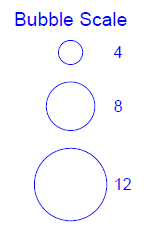
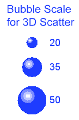
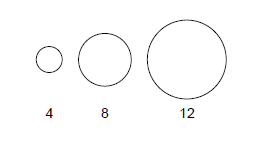
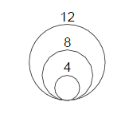

Ab Origin 2015 wird das Hinzufügen einer Blasenskala zu Ihrem 2D-Diagramm unterstützt. Ab Origin 2017 wird dies auch für 3D-Punktdiagramme unterstützt. Die Blasenskala ist ein spezielles Beschriftungsobjekt, das eine Legende auf Grundlage der Blasengröße und die entsprechenden numerischen Beschriftungen für die Blasendiagramme anzeigt. Die Größe der Blasen wird über die Registerkarte Symbol des Dialogs Details Zeichnung festgelegt. Beachten Sie, dass in 3D-Diagrammen, wenn die Layerprojektion auf "Perspektive" gesetzt ist, die Blasenskala möglicherweise nicht so genau aussieht, ähnlich einem Objekt, das kleiner auf dem Bildschirm erscheint, je mehr es sich vom Betrachter entfernt.
|  |  |
Wenn Sie ein Blasendiagramm oder ein Farbiges Blasendiagramm erstellen, wird standardmäßig eine Blasenskala als Legende zu dem Diagramm hinzugefügt.
Außerdem könnte für jedes 2D-Symboldiagramm und 3D-Punktdiagramm, das einen Größenindex verwendet hat, eine Blasenskala mittels einer der folgenden Methoden hinzugefügt werden:
Dieser Dialog wird verwendet, um den Stil der Blasenskala festzulegen und anzupassen. Sein Aufbau entspricht der Baumstruktur, so dass Sie, wenn Sie eine benutzerdefinierte Anpassung durchführen möchten, zunächst die gewünschte Seite im linken Bedienfeld auswählen müssen und dann die Einstellungen im rechten Bedienfeld ändern.
Um den Dialog Steuerung der Blasenskala zu öffnen:
oder
Legen Sie den Anfangswert der Blasenskala in diesem Textfeld fest.
Legen Sie den Endwert der Blasenskala in diesem Textfeld fest.
| Typ |
|
|---|---|
| Wert | Diese Option ist nur verfügbar, wenn Nach Inkrement für Typ gewählt ist. Legen Sie den Inkrementwert für diese Blasenskala in dem verbundenen Textfeld fest. |
| Anzahl | Diese Option ist nur verfügbar, wenn Nach Anzahl für Typ gewählt ist. Geben Sie die gewünschte absolute Anzahl der Skalenstufen insgesamt in das entsprechende Textfeld ein. |
| Datensatz | Diese Option ist nur verfügbar, wenn Nach Datensatz für Typ gewählt ist. Wählen Sie den Datensatz für die Blasenskala in dieser Auswahlliste. Sie können auch den gewünschten Datensatznamen oder eine Reihe von durch Leerzeichen getrennte Zahlen eingeben. |
| Erste Ebene | Diese Option ist verfügbar, wenn Nach Inkrement oder Nach Anzahl für Typ ausgewählt ist. Legen Sie den Wert der ersten Ebene für die Blasenskala fest. Beachten Sie, dass dieser Wert im Bereich zwischen Von und Bis für die Blasenskala liegen muss. Wenn er nicht festgelegt ist, wird der Wert Von verwendet. |
Die Anzeige der Ebenenbeschriftungen der Blasenskala kann mit Hilfe der Bedienelemente unter diesem Baumknoten benutzerdefiniert angepasst werden.
Eine ausführliche Beschreibung dieser Bedienelemente können Sie in der Hilfedatei zu der Beschriftung der Hilfsstriche im Dialog Achsen nachlesen.
| Farbe | Wählen Sie aus dieser Auswahlliste die gewünschte Beschriftungsfarbe aus. Erstellen Sie benutzerdefinierte Farben, indem Sie auf die Schaltfläche Benutzerdefinierte Farben definieren klicken und die RGB-Werte im Dialog Farbe festlegen. |
|---|---|
| Drehen (Grad) |
Origin unterstützt die beliebige Drehung der Blasenskalenbeschriftungen. Geben Sie eine positive Zahl in dieses Textfeld ein, um die Beschriftungen gegen den Uhrzeigersinn zu drehen, und eine negative Zahl, um sie im Uhrzeigersinn zu drehen (Origin ändert die eingegebene negative Zahl in die entsprechende positive Zahl gegen den Uhrzeigersinn).
Die Option <Auto> bedeutet, dass die Beschriftungen der Blasenskala sich gemäß der Richtung des Blasenskalenobjekts dreht. Das heißt, die Beschriftungen sind immer senkrecht zum Blasenskalenobjekt. |
| Schriftart |
|
Wählen Sie den gewünschten Hintergrund für das Blasenskalenobjekt aus dieser Liste aus.
Dieses Auswahlmenü bietet zwei Optionen für das Layout der Blasenskala:
| Layout = Linear | Layout = Geschachtelt |
|---|---|
|  |  |
| 1. Symbolstil folgen | Der Blasenstil der Skalierung folgt dem Symbolstil des ersten Datenpunkts in der Datenzeichnung. |
|---|---|
| Schwarzer Rand und keine Füllung | Nehmen Sie unabhängig vom Symbolstil für den Blasenstil folgende Einstellungen vor: Randfarbe auf Schwarz und Füllfarbe auf Keine. |
Verwenden Sie dieses Kombinationsfeld, um die Randbreite der Symbole in der Skala auszuwählen oder einzugeben.
Der Wert ist ein Prozentanteil der ursprünglichen Dicke der Symbole und beträgt ungefähr 1 Pixel.
Wenn er auf 200 gesetzt ist, bedeutet das, dass die Randdicke der Symbole in der Skala 2* sind (ursprüngliche Liniendicke), was ungefähr 2 Pixel erreichen sollte.
Wählen Sie Auto, um der Rahmendicke des Quelldiagramms zu folgen.
Diese Option ist nur für das lineare Layout der Blasenskala verfügbar (Layout ist auf Linear gesetzt).
| Vertikal | Wenn diese Option aktiviert ist, wird das Blasenskalenobjekt immer in vertikaler Richtung angezeigt. |
|---|---|
| Horizontal | Wenn diese Option aktiviert ist, wird das Blasenskalenobjekt immer in horizontaler Richtung angezeigt. |
Dieses Kontrollkästchen ist nur für das lineare Layout der Blasenskala verfügbar (Layout ist auf Linear gesetzt).
Aktivieren Sie dieses Kontrollkästchen, um die Blasenskala und die zugehörigen Beschriftungen umzukehren.
Dieses Kontrollkästchen ist nur für das geschachtelte Layout der Blasenskala verfügbar (Layout ist auf Geschachtelt gesetzt).
Aktivieren Sie dieses Kontrollkästchen, um nur die linke Hälfte der Symbole in der Blasenskala zu zeigen.
Legen Sie fest, ob die Beschriftungen auf der gegenüberliegenden Seite der Blasenskala gezeigt werden sollen.
Diese Option ist nur dann verfügbar, wenn der Layout auf Linear gesetzt wurde. Sie wird verwendet, um den Abstand zwischen den am nächsten liegenden Rändern der Blasensymbole festzulegen. Beachten Sie, dass es eine Mindesteinschränkung bezüglich der Abstandsgröße gibt, um Überschneidungen zu vermeiden.
Die Optionen unter diesem Zweig werden verwendet, um die Abstände im Blasenskalenobjekt festzulegen. Die Optionen unterscheiden sich auf Grundlage der verschiedenen Layouttypen. Alle Einstellungen basieren auf der Einheit in % der aktuellen Schrifthöhe der Blasenskalenbeschriftung.
Linear
| Beschriftungsversatz von Symbolrand | Legen Sie den Abstand zwischen den am nächsten liegenden Rand des größten Blasensymbols und seiner zugehörigen Beschriftung fest. |
|---|---|
| Seitlicher Versatz der Beschriftung von Symbolmitte |
Legen Sie einen seitlichen Versatz fest, um die Beschriftungen entlang der Richtung des Blasenskalenobjekts im Verhältnis zur entsprechenden Blasensymbolmitte zu versetzen. Sowohl positive als auch negative Werte sind zugelassen und bedeuten eine Verschiebung in entgegengesetzte Richtungen. |
Geschachtelt
| Beschriftungsversatz von Symbolmitte | Legen Sie den horizontalen Abstand zwischen Beschriftungen und Symbolmitte fest. Sowohl positive als auch negative Werte sind zugelassen und bedeuten eine Verschiebung in entgegengesetzte Richtungen. |
|---|---|
| Seitlicher Versatz der Beschriftung von Symbol oben | Legen Sie den vertikalen Abstand zwischen dem unteren Ende der Beschriftungen (wenn Drehen (Grad) = 0) und dem oberen Ende des entsprechenden Blasensymbols fest. Sowohl positive als auch negative Werte sind zugelassen und bedeuten eine Verschiebung in entgegengesetzte Richtungen. |
Dieses Kontrollkästchen ist nur für das geschachtelte Layout der Blasenskala verfügbar (Layout ist auf Geschachtelt gesetzt).
Aktivieren Sie dieses Kontrollkästchen, um die Verbindungslinien in der Blasenskala zu zeigen. Verbindungslinien sind ein Linienobjekt, das die Beschriftung und die jeweilige Blase miteinander verbindet. Das Linienobjekt beginnt oben auf dem Symbol der jeweiligen Blase und endet in der Mitte des Beschriftungstexts links, wenn kein Abstand festgelegt ist. Wenn dieses Kontrollkästchen aktiviert ist, werden die Bedienelemente für den Stil der Verbindungslinien erweitert und Sie können die Verbindungslinie mit den folgenden Optionen benutzerdefiniert anpassen:
| Liniendicke | Wählen Sie die Breite der Verbindungslinie aus dem Kombinationsfeld oder geben Sie einen anderen Wert ein. |
|---|---|
| Automatisches Neupositionieren zur Vermeidung von Überschneidungen | Aktivieren Sie dieses Kontrollkästchen, um automatisch neue Positionen für Beschriftungen festzulegen, so dass sie sich nicht überschneiden. Wenn dieses Kontrollkästchen aktiviert ist, werden die folgenden drei Optionen verfügbar, um Kriterien für die Neupositionierung festzulegen. Außerdem ist es möglich, eine Polylinie als Verbindungslinie zu definieren. |
| Abstand zwischen Beschriftungen (% Schriftart) | Geben Sie einen Wert ein, um den vertikalen Abstand zwischen Beschriftungen zu definieren. Dies definiert die Kriterien der automatischen Neupositionierung. Beachten Sie, dass der Wert dieser Kontrollkästchen auf eine nicht negativen Wert gesetzt sein sollte, um Überschneidungen der Beschriftungen zu vermeiden. Der Wert ist in % der Schrifthöhe des Beschriftungstexts angegeben, die im Baumknoten Schriftart auf der Seite Beschriftungen definiert ist. |
| Verbindungslinie für Symbol (% Linie) | Wählen Sie bzw. geben Sie einen Wert an, um die Länge der Verbindungslinie für das Symbol zu definieren. Der Wert ist in % der Verbindungslinienlänge in horizontaler Richtung angegeben. |
| Verbindungslinie für Beschriftung (% Linie) | Wählen Sie bzw. geben Sie einen Wert an, um die Länge der Verbindungslinie für die Beschriftung zu definieren. Der Wert ist in % der Verbindungslinienlänge in horizontaler Richtung angegeben. |
| Abstand zwischen Linie und Symbol (% Schriftart) | Geben Sie einen Wert ein, um den Versatz zwischen dem oberen Ende des Blasensymbols und dem angrenzenden Anfangspunkt der Verbindungslinie (d.h. der Verbindungslinie des Symbols) zu definieren. Der Wert ist in % der Schrifthöhe des Beschriftungstexts angegeben, die im Baumknoten Schriftart auf der Seite Beschriftungen definiert ist. |
| Abstand zwischen Linie und Beschriftung (% Schriftart) | Geben Sie einen Wert ein, um den Versatz zwischen dem angrenzenden Endpunkt der Verbindungslinie (d.h. Verbindungslinie der Beschriftung) und der Mitte des Beschriftungstexts links zu definieren. Der Wert ist auch in % der Schrifthöhe des Beschriftungstexts angegeben. |
| Zeigen | Legen Sie fest, ob der Titel auf der unteren Achse gezeigt wird. |
|---|---|
| Titel | Geben Sie den Text ein, der im Titel der Blasenskala verwendet werden soll. Standardmäßig lautet die Syntax %(?S, @options), wobei sich ?S auf den Datensatz für den Größenindex bezieht und @option bestimmt, welche Spaltenmetadaten verwendet werden sollen. Einzelheiten werden in Substitutionsnotation des Legendentexts beschrieben. |
| Position | Legen Sie die Position des Titels im Verhältnis zum Blasenskalenobjekt fest: Oben, Unten, Links und Rechts. |
| Drehen (Grad) |
Origin unterstützt die beliebige Drehung des Blasenskalentitels. Geben Sie eine positive Zahl in dieses Textfeld ein, um den Titel gegen den Uhrzeigersinn zu drehen, und eine negative Zahl, um ihn im Uhrzeigersinn zu drehen (Origin ändert die eingegebene negative Zahl in die entsprechende positive Zahl gegen den Uhrzeigersinn).
Die Option <Auto> bedeutet, dass der Titel der Blasenskala sich gemäß der Richtung des Blasenskalenobjekts dreht. Das heißt, der Titel ist immer senkrecht zum Blasenskalenobjekt. |
| Farbe | Legen Sie mit dieser Auswahlliste eine Farbe für den Titeltext fest. |
| Schriftart |
|